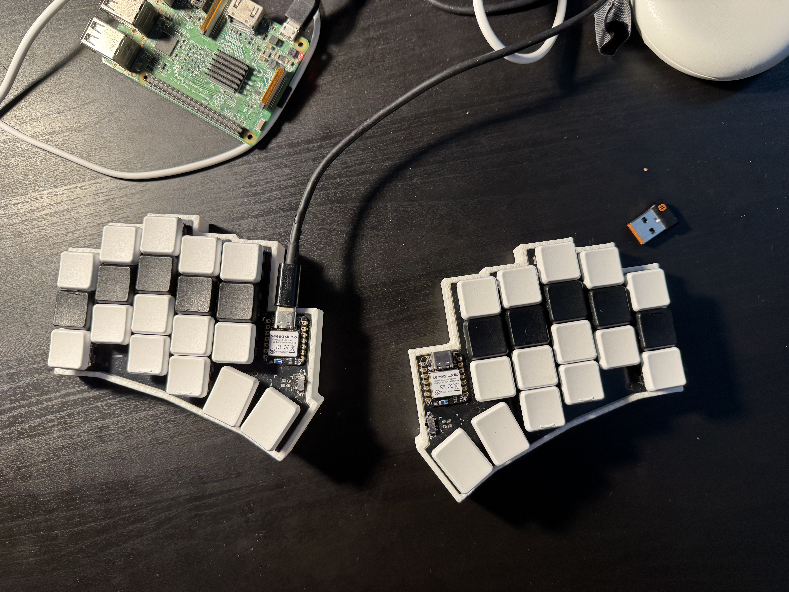
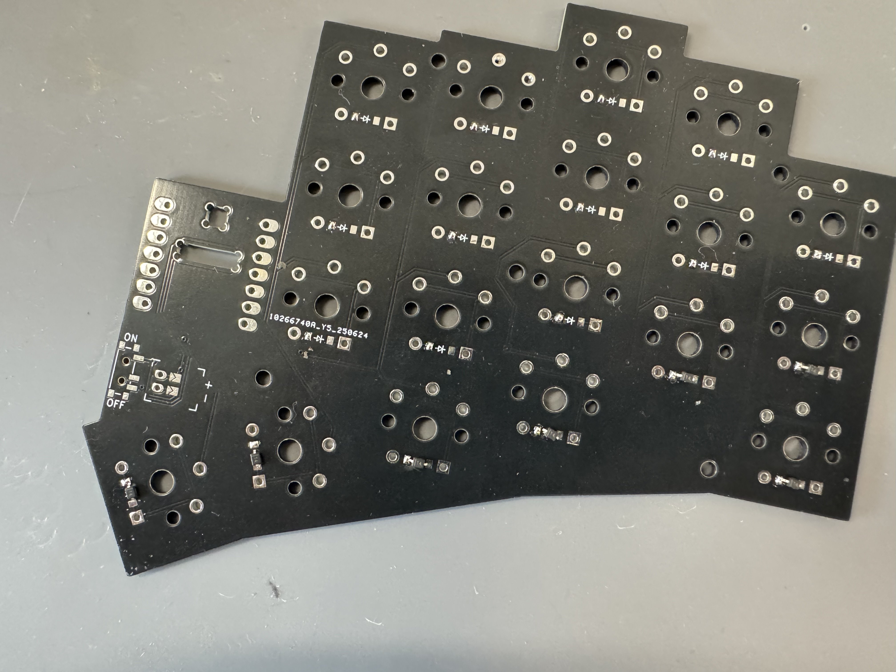
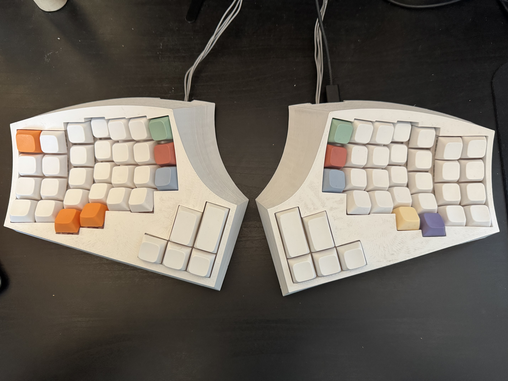
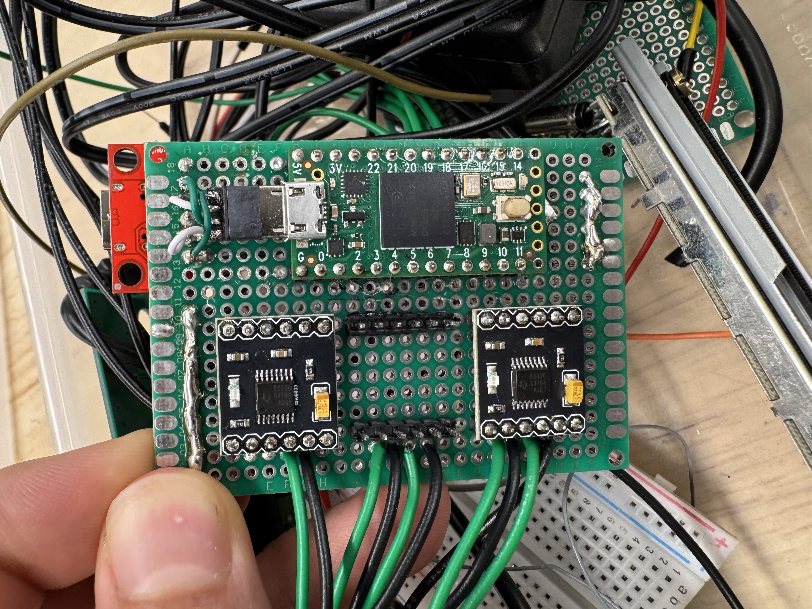
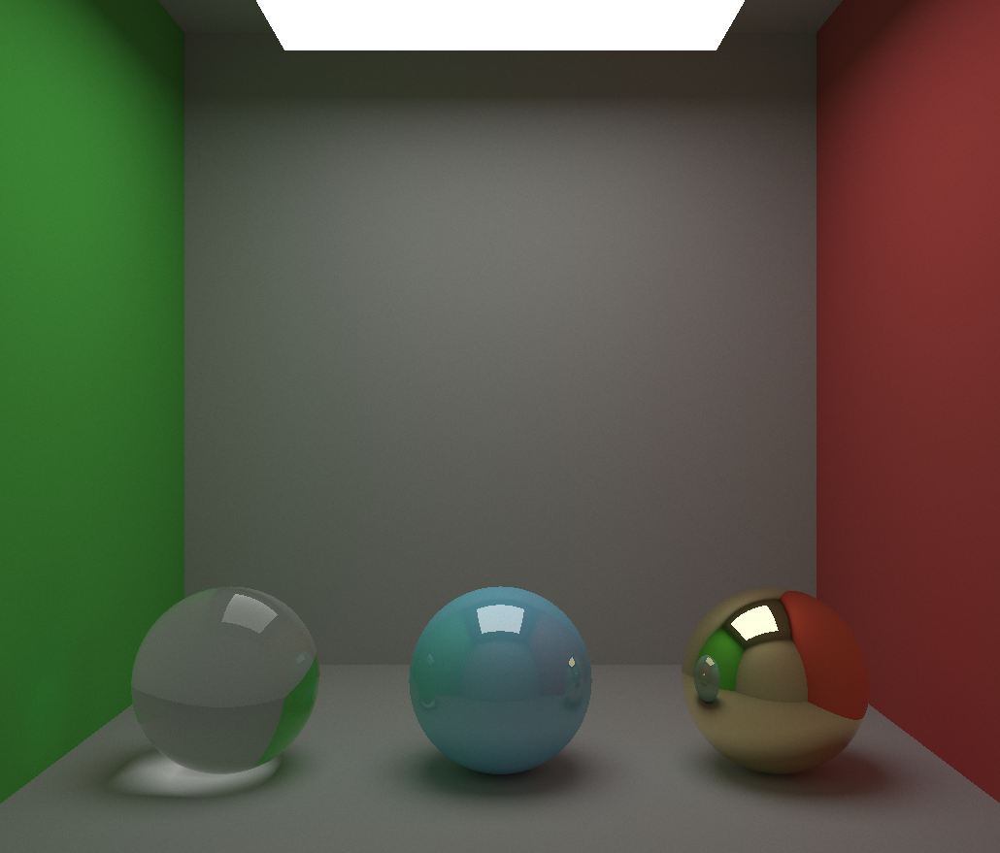
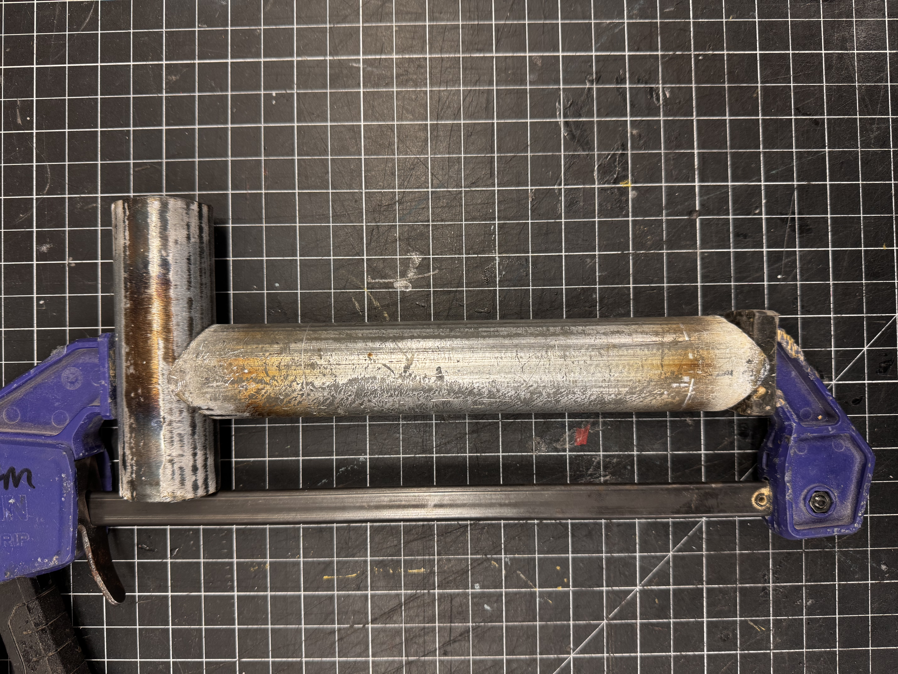

I engineered and manufactured a custom split keyboard system designed to optimize typing ergonomics by minimizing finger travel and reducing strain. Utilizing KiCad, I designed and routed a PCB that would work as both a left hand and right hand keyboard. Later realized the downsides of small keyboards when it came to doing anything other than writing prose and designed a larger 76 key concave keyboard where even thought fingers needed to move more the keys were positioned so I didn’t have to reach as far.





My brother wanted extra faders for his midi keyboard and laptop. I ordered replacement Behringer faders and wired up their potentiometers and motors to a Teensy 4.0 microcontroller and drv8833 motor contorllers. The sliders can be moved by hand and send MIDI control commands over usbc to a connected computer. If a value on the computer is changed it sends that to the microcontroller which then moves the fader using closed loop control. Video of it in action:

Created a software graphics engine in C++, that simulated rays of light bouncing off spheres and planes to create images based off of the book Ray Tracing in One Weekend. All models are defined mathematically and materials determine how a light ray interacts with the surface once an intersection has been determined. Created 3 base materials, glass/translucent, metallic/glossy, and a generic diffuse material.
Full code can be seen here, though it was left in the middle of experimenting with other graphics apis. https://github.com/imccunepedit/RyeTracer

I served as the Electrical Design Lead for a team of six design to develop a functional, small-scale CNC plasma tube notcher. I was responsible for selecting and integrating stepper motors, configuring drivers, and relay logic to control the plasma cutter. Video of the machine in action:
